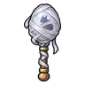
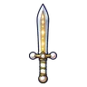
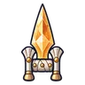
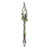
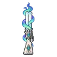
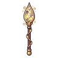

หุ่นของคาร์ดินัล
มอนธาตุศักดิ์สิทธิ์ Lv 92–99
เจอที่
| แมพ | โซน | Lv | ภูมิภาค |
|---|---|---|---|
| ย่านวิหาร | 92–96 | เมืองหอระฆัง | |
| ย่านวิหาร | 94–99 | เมืองหอระฆัง | |
| ย่านวิหาร | ย่านคนจนหลังรั้ว | 94–99 | เมืองหอระฆัง |
| ย่านวิหาร | ลานระฆังขาว | 96–98 | เมืองหอระฆัง |
| ย่านวิหาร | ลานระฆังขาว | 97–99 | เมืองหอระฆัง |
| สวนรูปปั้นขาว | 94–99 | เมืองหอระฆัง | |
| ลานหอนาฬิกา | 94–99 | เมืองหอระฆัง | |
| ลานหอนาฬิกา | ใต้หอนาฬิกา | 98–99 | เมืองหอระฆัง |
| หลังคาเมือง | 94–99 | เมืองหอระฆัง | |
| หอรากมืด (Dark Root) | คณะประสานเสียงเงียบ | 62–71 |
ค่าสถานะตามเลเวล
| Lv | HP | ATK | DEF | MDEF | EXP | Job |
|---|---|---|---|---|---|---|
| 92 | 99,667 | 265–398 | 44 | 39 | 146 | 110 |
| 95 | 108,511 | 281–420 | 46 | 40 | 151 | 113 |
| 99 | 121,000 | 301–451 | 48 | 42 | 157 | 118 |
ตีด้วยธาตุไหนดี
แรงขึ้น: มืด ×1.25
เบาลง: น้ำ ×0.75 ดิน ×0.75 ไฟ ×0.75 ลม ×0.75 พิษ ×0.75 วิญญาณ ×0.75 ศักดิ์สิทธิ์ ×0
วัตถุดิบที่ดรอป
| ของ | โอกาส | |
|---|---|---|
| เชือกทองของคาร์ดินัล | 50% | 1 ชิ้น (15% ได้ 2) |
| ด้ายแดง | 25% | 1 ชิ้น (15% ได้ 2) |
อุปกรณ์ที่ดรอป (8)
| ของ | โอกาส |
|---|---|
 กระบองรังไหม | 0.12% |
 ดาบคู่ประกายดาว | 0.06% |
 คาทาร์ศิลาสุริยา | 0.06% |
| 0.06% | |
 หอกยาวบุปผาราตรี | 0.06% |
 ลูกซองแสงเหนือ | 0.06% |
 หอกโหลหิ่งห้อย | 0.06% |
| 0.06% |
สกิล
ม่านเวท (Lv 25+) · ม่านเวท (Lv 60+) · ยิงกระจาย (Lv 60+)